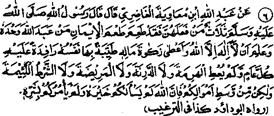

Chapter Four · Section (b): Ahadith on the virtues of Zakaat
2. As a rule, things of medium quality are to be given as Zakaat

Hadith 6
Rasulullah Sallallaho alaihe wasallam said, "He who observes three things will taste the sweetness of Imaan (faith): One who worships Allah alone and believes (from his heart) that there is no one to be worshipped but Allah and one who pays the Zakaat on his property, willingly, every year. In Zakaat on the animals, one should not give an aged animal or one suffering from itch or any other ailment, or an inferior one, but should give animals of average quality. Allah Ta'ala does not demand from you the best of your animals, nor does He command you to give animals of the worst quality”.
Note: Though the Hadith is about the Zakaat of animals, the rule applies to all things given as Zakaat. It is not necessary to give away things of the best quality, nor is it permissible to give things of the worst quality; the true spirit of Zakaat lies in giving away things of average quality (of ones possessions). However, if someone gives away things of good quality, of his own sweet will, in order to win the pleasure of Allah Ta'ala and to earn His blessings, it would be a sign of his being a blessed soul, specially favoured by Allah Ta'ala. In this regard, one should keep in view the lives of the Sahabah Radhiallaho anhum arid consider their examples carefully.
At this point, we shall relate two incidents from the lives of the Sahabah by way of illustration. Muslim Ibne Shu'bah Rahmatullah alaihe says: "Nafey Ibne Alqamah had appointed my father as headman of his tribe, and ordered him once to collect Zakaat from the entire tribe. My father sent me to collect Zakaat from them, so I came to an old man, called Si‘r Radhiallaho anho and told him that my father had sent me to collect Zakaat from him. Si‘r Radhiallaho anho said, “What kind of animal will you take, my nephew? I replied, I shall select the best animals and I shall also examine whether the udders of the goats are long enough. ‘He said, ‘Let me first relate a Hadith to you (so that you may know the general rule and then you may do as you like). I lived in this land during the time of Rasulullah Sallallaho alaihe wasallam when two persons came to me and they said, "We are messengers of Rasulullah Sallallaho alaihe wasallam to you and he has sent us to collect Zakaat from you". I showed them all my goats and asked them what was due on me for them. They counted the goats and said, ‘One goat’. I selected a goat which I knew was full of milk and fat and brought it to them. They saw it and said, "This is a pregnant goat and we have been prohibited by Rasulullah Sallallaho alaihe wasallam to accept such goats. I asked, ‘What kind of goat will you take, then? ‘They said, ‘A kid that is six months old or a goat in its first year. I then went and brought a kid that was six months old. They took it and went away. "Evidently, Si'r Radhiallaho anho wanted to give the best goat of the entire lot. But he related the Hadith to the collector of Zakaat, so that he might know the general rule about collecting Zakaat on animals.
Ubbaiyy bin Ka‘b Radhiallaho ortho relates:
"I was once commissioned by Rasulullah Sallallaho alaihe wasallam as a collector of Zakaat and I went to a person who gathered his camels before me and I found, on calculation, that a one-year-old she-camel was due from him. I said, Give a she-camel in her second year as Zakaat, ‘but he said, ‘What use will be a one-year-old she-camel to you? It is not worthy of milking or riding. He then selected a very good, fat, healthy and well-built she-camel and said, Here is another; so, take it I said to him, "I cannot take it. Rasulullah Sallallaho alaihe wasallam is on a journey and he is going to stay at a place quite near to you. If you like, go to him and present it to him directly. If he accepts it I shall accept it from you’. The man accompanied me to Rasulullah Sallallaho alaihe wasallam and took with him the she-camel which he had presented to me. We came to Rasulullah Sallallaho alaihe wasallam and the man submitted thus, ‘O Rasulullah, your messenger came to me to collect Zakaat By Allah, I never had the privilege of being commanded to pay Zakaat by you or your messengers. I presented all my camels to the collector. He examined them and said that a one year old she-camel would be due on them. But a one year old she-camel has neither milk nor is it worth riding. I, therefore, presented one of my best she-camels to be accepted as Zakaat but he refused to accept it. So, I have brought it with me to present it to you. Kindly do accept it O Rasulullah!’ At this, Rasulullah said ‘Only that is what was due from you, but if you want to give a better she-camel, to serve you partly as Nafl Sadaqah and partly as Fardh Zakaat Allah Ta’ala will reward you for that. ‘The man said, ‘O Rasulullah, I have brought the she-camel with me so that you may accept it’. Rasulullah Sallallaho alaihe wasallam then advised that it should be taken from him. (Abu Dawood)
How ambitious were the Sahabah Radhiallaho anhum to give away their best property as Zakaat! They felt proud and deemed it an honour to welcome the messenger for collection of Zakaat sent by Rasulullah Sallallaho alaihe wasallam. They never regarded Zakaat as a tax levied upon them, but believed that payment of Zakaat was a sacred duty, which they had to perform in their own interest. Today, we keep back the best of our possessions for our future needs, but they believed that the property given away for the cause of Allah was the one well-disposed of.
Under the Ayat given at serial No. 11 in Chapter one, we have already related an incident about Abu Zarr Radhiallaho anho, who allowed a man from the Banu Sulaim tribe to live in companionship with him only on condition that, whenever he asked the man to give Sadaqah out of his possessions, the man should select the best and finest things for the purpose. And the Hadith quoted at serial no. 10 in section five below states that things of inferior quality should never be given as non-obligatory Sadaqah, much less as (Fardh) Zakaat.